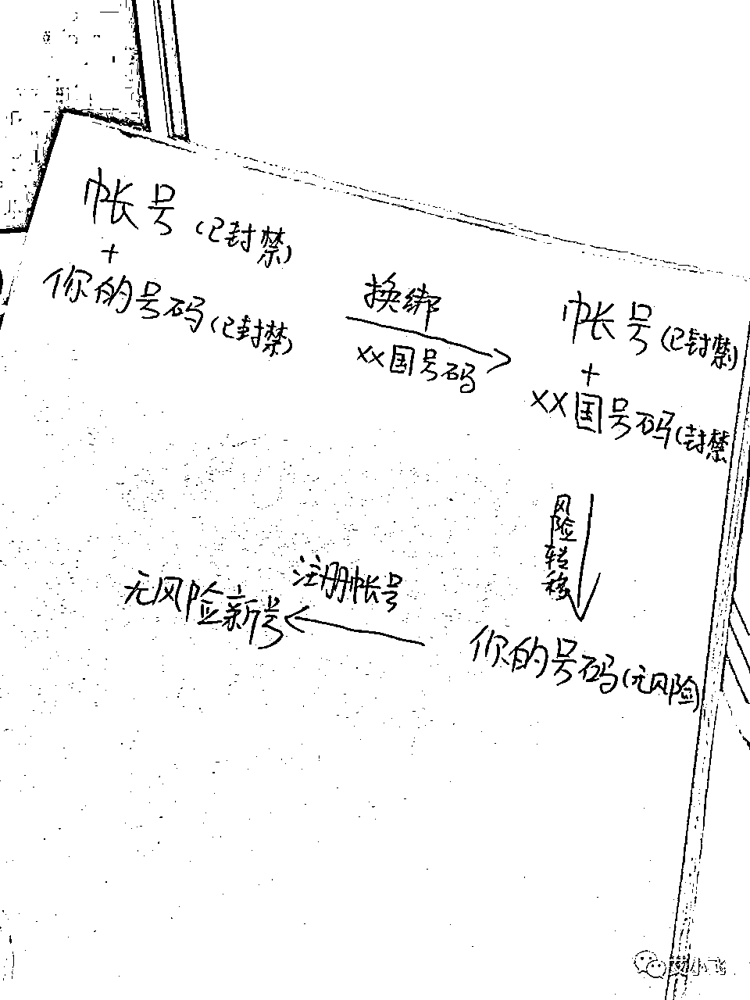
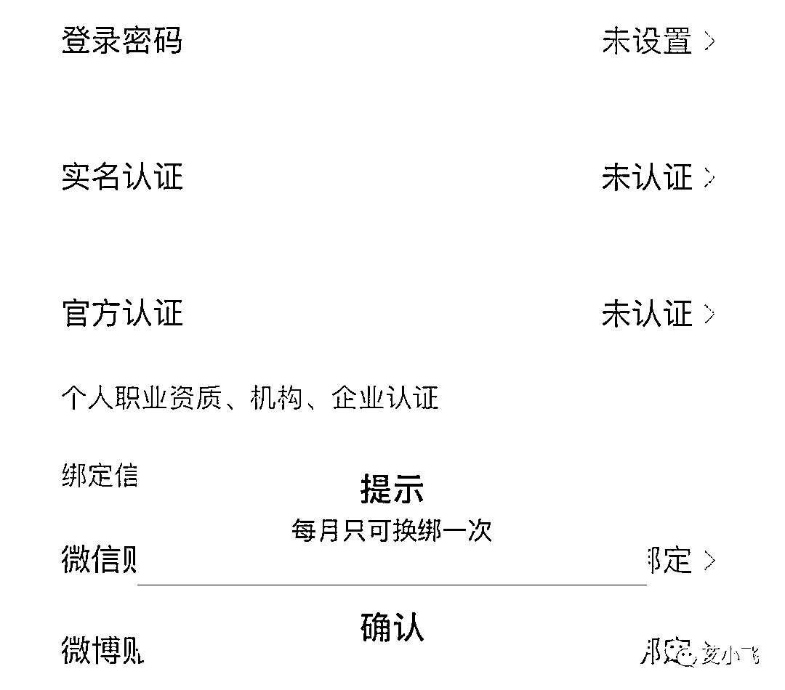

来源：https://lw03aeuj0n.feishu.cn/docx/D8lSdrLKlok6YlxJF2Gca9XXnOe
大家好，我叫艾小飞，专做小红书流量
最近小红书平台对违规行为的打击越来越严了，不是被限流，就是被封号的！根本不给你任何喘气的机会！
为什么？
因为小红书平台，已经不需要也不欢迎低质量创作者了，不但影响形象，还会扰乱社区环境
这是小红书近期严打的根本原因
当你看到自己的小红书账号被提示永久封禁的那一刻，心都凉了一大截，对吧
对的，我账号第一次被封禁了，也有跟你一样的这种心情，但被封号次数多了，麻了
因为我是玩小红书流量矩阵的，每天同时操作几十个号引流，被封也是家常便饭的事了
所以对于小红书如何解封，如何低成本高效率的解封，我自己都研究出了一套成功率超高的模板
原本解封我就“业余”的，因此反而被迫成了“专业”，没办法，被逼的
我也在小红书实战的摸爬滚打一年多了，啥样的场面和情况我都见识过了
所以今天我就不说什么空话和大道理，那些没用，只讲对你们有用有帮助的，该如何低成本高效率的去解开小红书号！这才是这篇文章的重点
在此，根据我解封的经验，来给大家科普下小红书封号都有哪些类型
现在小红书被永久封禁有两种类型
一个是【设备】永久封禁
一个是【账号】永久封禁
关于小红书设备解封我就不说了，如何解封小红书设备，可以看这篇文章小红书被永久封号，终于解封成功了！！
用这个办法，能解开市面上所有90%的封禁账号，除非你是干了违法犯罪的事，那就没办法解
今天我想重点来讲讲，账号被封禁了，如何捞出手机号码再重新注册新号？
先说下，这个仅适合小红书账号不怎么重要的情况下操作的，如果你小红书账号被封禁了，这个号对你来说很重要，那么这招就不太显灵了
因为号码一旦捞出来，你原账号就找不回了
OK，清楚了这点，我们来说说如何去捞号码
先说思路，流程是把你违规账号绑定的手机号码，换绑成其他国家的手机号码，把风险转移到别人的号码上，这样你的号码释放出来后，又能重新的注册一个小红书新号了

有两种渠道
一个是国内的平台找
一个是国外的平台找
先说国内的吧
比如你去淘宝闲鱼搜“境wai号”“国wai号”这种关键词，就能搜索少量卖号的商家，他们一般会卖10块左右一个号，很便宜
或者去小红书公众号上搜，也能搜出少量的资源，一般是卖40元5个号，你去找他们谈好价，让他们接个验证码就行了
另外一种是国外的
可以去推特、小飞机上搜索：新加坡号码，马来西亚号码、日本号码、泰国号码等
出来全是一堆密密麻麻的卡任你选，也就几块钱，不贵
因为号商这种在国内是属于擦边灰产的，不太好找，如果你有梯子，可以去外面找找看
如果实在找不到，可以来找我，我把我自己的资源分享给你，但他卖给我的是40元5个号，我觉得是比较贵的，如果你想要，我把他名片推给你，你自己去跟他谈
如果你想捞出自己的手机号码，平台要求换绑时间，要在注册后一个月才能操作

如果你是刚注册没多久就被封号的，那可能需要等等了
你用原违规的号码注册后，有可能会被隐性限流，有可能会被提示封号，也有可能会限制部分功能使用
为什么？
因为你账号被封的那一刻，平台已经记录下你的手机设备型号、号码和网络了
如果你之前违规的行为很严重，比如触犯了法律，那你再用这个刚捞出来的号码去注册新号，也会被提示永久封禁的
如果你之前的违规行为，只是恶意营销、导流这种，又是初犯的，那问题不是很大，注册后的笔记流量，依旧是正常的
其实关于小红书封号解封的这件事情上，还有非常多的经验和办法去解决的。
因为我的这些经验和成功解封的办法，都是自己慢慢摸索和实战出来的，有些甚至是花了钱弄来的
目前这些对我来说是没多大价值了，但对于正在为解封而烦恼的朋友来说，却是有很大的参考价值
如果你们对这个系列的内容感兴趣，可以多给些点赞的反馈。我看到后，将会有更多的创作动力来分享你们不知道的解封秘密
下期分享小红书被永久封号后，怎么申诉通过率会更高？
好了，今天的分享就到这里了
我叫艾小飞，专做小红书流量